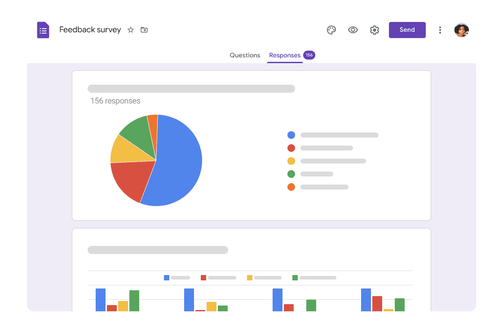

¿Qué vamos a investigar?
Para dar respuesta a nuestro reto inicial y descubrir si somos realmente dueños de nuestro tiempo libre, necesitamos diseñar un estudio estadístico basado en nuestra propia realidad. En lugar de trabajar con ejercicios abstractos, vamos a recoger y analizar nuestros propios datos diarios, centrándonos en nuestro consumo digital y nuestras rutinas.
¿Qué necesitamos para nuestra investigación estadística?
- Dispositivos digitales con conexión a internet: Trabajaremos tanto en nuestra aula en grupos como en el aula de informática del centro.
- Google Forms: Para diseñar nuestro cuestionario digital y recoger los datos de toda la clase de forma rápida y anónima.
- Una hoja de cálculo (como Microsoft Excel): Será nuestra principal herramienta para procesar la información, automatizar los cálculos de la covarianza y la correlación, y generar nuestros gráficos bidimensionales.
- Herramientas de diseño (Canva, Genially, Prezi o PowerPoint): Para darle un formato visual y profesional a nuestro informe estadístico final.
- Nuestro cuaderno de trabajo: Para tomar notas, apuntar las variables elegidas y organizar las tareas del equipo.
¡Un consejo!
Elegid un tema que os genere curiosidad real. Pensad en aquellos hábitos que creéis que os están afectando en vuestro día a día. ¡Cuanto más cercano sea el tema, más interesante será el informe estadístico que presentaréis al final!
Algunos ejemplos
En nuestro día a día estamos rodeados de noticias, estudios y vídeos virales que intentan relacionar nuestras rutinas para explicarnos cómo funciona el mundo. Vamos a conocer algunos ejemplos interesantes:
¿Estudiar escuchando música mejora o empeora nuestras notas?
Muchos estudiantes afirman que escuchar a sus artistas favoritos de fondo les ayuda a concentrarse, mientras que otros prefieren el silencio absoluto. ¿Qué dicen los datos empíricos? Diversos estudios estadísticos han intentado relacionar las horas de escucha musical durante el estudio con el rendimiento académico.
El "postureo" en redes sociales y nuestra autoestima
Pasar mucho tiempo consumiendo vidas aparentemente perfectas en internet forma parte del consumo digital habitual. Diferentes investigaciones han utilizado formularios para recoger datos y analizar si existe una fuerte correlación estadística entre el número de horas al día que pasamos en Instagram o TikTok y los niveles de autoestima o bienestar emocional.
¿Entrenar quita tiempo o mejora las notas?
A menudo pensamos que dedicar muchas horas a hacer deporte o ir al gimnasio nos roba tiempo de estudio. Sin embargo, diversos análisis de datos intentan demostrar si la actividad física regular mejora la concentración y, sorprendentemente, aumenta nuestro rendimiento académico. ¡Una variable bidimensional perfecta para investigar en clase!Arranca nuestra investigación
Antes de lanzarnos a hacer cálculos matemáticos, es fundamental diseñar correctamente nuestro estudio estadístico. Para ello, vamos a seguir estos pasos:
¿Cómo diseñamos nuestro cuestionario digital?
¡Muy sencillo! Usaremos la aplicación de Google Forms para crear una encuesta colaborativa que enviaremos a toda la clase. Esto nos permitirá conseguir los datos necesarios y exportar los resultados de forma rápida y totalmente anónima.

Lectura facilitada
El equipo tendrá que usar la aplicación IBERPIX para:
-
Localizar geográficamente el centro.
- Elegir una zona del centro donde podría ir el toldo.
-
Tomar las medidas necesarias para calcular las dimensiones del toldo, y evaluar la idoneidad de la zona elegida.
- Tomar una decisión sobre el sitio para instalar el toldo.
Audio
Descripción de la tarea a realizar.
Apoyo visual

Aprende Google Forms
Con GoogleForms podréis:
- Diseñar diferentes tipos de preguntas (numéricas, escalas, opciones) para recoger los datos de vuestras dos variables estadísticas de forma clara y estructurada.
- Recopilar las respuestas de toda la clase garantizando el anonimato mediante el envío de un simple enlace.
- Exportar automáticamente todos los resultados a una hoja de cálculo, lo que nos ahorrará muchísimo tiempo y nos permitirá empezar directamente con el análisis estadístico de nuestra investigación.
Apoyo visual

¿Qué tipo de preguntas vamos a necesitar para nuestro estudio?
Vamos a ponerlo más fácil y trabajaremos con preguntas cerradas y numéricas para poder cuantificar la información de manera precisa.
Por tanto, el siguiente paso será determinar el contenido de nuestro formulario. Para ello tendremos en cuenta:
- Las dos variables bidimensionales que hayamos elegido investigar (por ejemplo, las horas de uso del móvil frente a las horas de sueño).
- Que las preguntas que redactemos sean claras, concisas y fáciles de responder.
- Garantizar que todas las respuestas que recojamos de nuestros compañeros mantengan el anonimato.

Lectura facilitada
El diseño elegido serán los cuadrados granny
El equipo tendrá que estimar el tamaño del cuadrado Granny teniendo en cuenta:
-
La superficie del toldo.
-
El número de alumnos y alumnas que colaborarán en el proyecto.
-
El número de cuadrados granny que tendría que hacer cada alumno o alumna
Audio
Descripción de la tarea
Apoyo visual

¿Cómo se diseña un cuestionario digital en Google Forms?
Si quieres conocer la técnica para elaborar vuestra propia encuesta digital de forma rápida y sencilla, seguro que te interesan estos videotutoriales:
Recursos y evaluación de los aprendizajes
Recursos
Webs
Noticias
- «¿Estudiar escuchando música mejora o empeora nuestras notas?».
- «El "postureo" en redes sociales y nuestra autoestima».
- «¿Entrenar quita tiempo o mejora las notas?»
Vídeos
- Correlación vs causalidad
- «¿Entrenar quita tiempo o mejora las notas?»
- «Cómo crear un formulario en Google Forms desde cero paso a paso»
- «Ver y descargar respuestas de tu formulario de Google Forms»
Productos evaluables
- La elección argumentada de la variable bidimensional que se va a investigar.
- El diseño del cuestionario digital colaborativo.